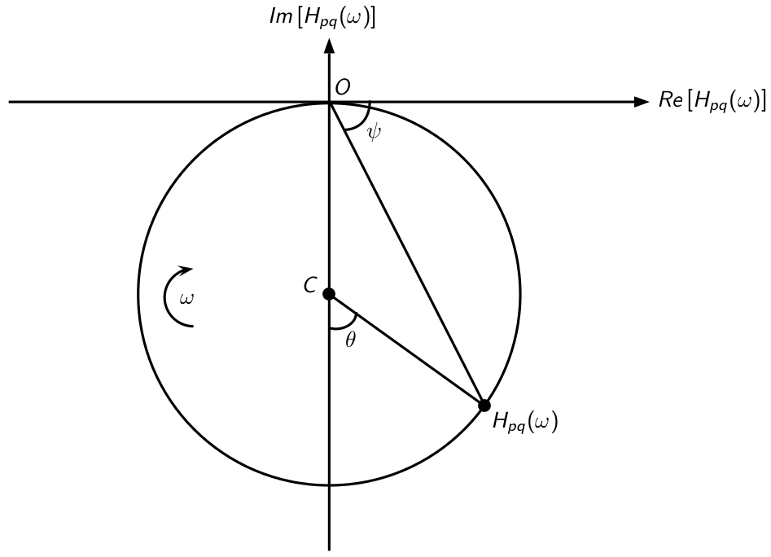

The Sdof methods are based on the assumption that the system can be represented as a single degree of freedom system. This means that the system can be described by a single natural frequency, damping ratio, and mode shape. The Sdof methods are typically used for systems that are lightly damped and for which the modes are well separated.
For these methods, it is assumed that the FRF (admittance) is given by: \[
H_{pq}(\omega) = \sum_{i = 1}^N\frac{_{i}A_{pq}}{\omega_i^2 - \omega^2 + j\eta_i\omega_i^2}
\] where, for a mode \(i\), \(_{i}A_{pq} = \Phi_i(x_p)\Phi_i(x_q)\) is the residue, \(\omega_i\) is the natural frequency, \(\eta_i\) is the modal damping factor, and \(\Phi_i(x_p)\) is the mass-normalized mode shape at the point \(x_p\).
When the natural frequencies of the modes are sufficiently spaced and the damping is low, one can write at a frequency \(\omega\) close to the natural frequency \(\omega_i\): \[
H_{pq}(\omega) \approx \frac{\Phi_i(x_p)\Phi_i(x_q)}{M_i\left(\omega_i^2 - \omega^2 + j\eta_i\omega_i^2\right)}.
\]
Note
One can note that the modal damping factor \(\eta_i\) is related to the damping ratio \(\xi_i\) by the relation: \[
\eta_i = 2\xi_i.
\]
1 Natural frequencies and damping ratios extraction
StructuralDynamics.jl provides two SDOF methods for extracting the natural frequencies and damping ratios of a system from its frequency response function (FRF):
Peak picking method
Circle fit method
1.1 Peak picking method
The peak picking method is a simple and effective way to extract the natural frequencies and damping ratios of a system. The method consists of the following steps:
Identification of natural frequencies
They are identified from the peaks of the amplitude of the FRF. The natural frequencies are identified as the frequencies at which the FRF has a local maximum. The local maxima are determined using Peaks.jl.
Estimation of modal damping factors
To estimate the value of the damping factor for mode \(i\), the half power bandwidth method is used. This procedure, valid for low damping (\(\eta_i < 0.1\)), first determines the frequencies \(\omega_1\) and \(\omega_2\) such that: \[
\vert H_{pq}(\omega_1)\vert = \vert H_{pq}(\omega_2)\vert = \frac{\vert H_{pq}(\omega_i)\vert}{\sqrt{2}},
\] with \(\omega_i \in [\omega_1, \omega_2]\).
Knowing the values of \(\omega_i\), \(\omega_1\), and \(\omega_2\), the damping ratio for mode \(i\) is determined using the formula: \[
\eta_i = \frac{\omega_2^2 - \omega_1^2}{2\omega_i^2}.
\]
Note
If we consider that the shape of a resonance peak is symmetric then \(\omega_i = \frac{\omega_1 + \omega_2}{2}\).
It comes that: \[
\omega_2^2 - \omega_1^2 \approx 2\omega_i(\omega_2 - \omega_1).
\]
Hence, the damping ratio can be approximated as: \[
\eta_i \approx \frac{\omega_2 - \omega_1}{\omega_i}.
\]
This formula is often given in textbooks when dealing with the half power bandwidth method.
Warning
Thanks to its extreme simplicity, this method allows for quick analysis. However, this method generally does not provide satisfactory results, as it relies on measuring the resonance peak, which is very difficult to measure precisely. This is why this method is mainly applicable to lightly damped structures with well-separated modes, whose transfer functions have been measured with good frequency resolution.
1.2 Circle fit method
The circle fit method is a more sophisticated method for extracting the natural frequencies and damping ratios of a system. It allows for more accurate results than the peak picking method. It is based on the fact that the admittance forms a circle (Nyquist circle) when plotted in the complex plane (see Figure 1). Indeed, assuming that the modes are mass-normalized, it can be shown that: \[
Re\left[H_{pq}(\omega)\right]^2 + \left(Im\left[H_{pq}(\omega)\right] + \frac{\Phi_i(x_p)\Phi_i(x_q)}{2\eta_i\omega_i^2}\right)^2 = \left(\frac{\Phi_i(x_p)\Phi_i(x_q)}{2\eta_i\omega_i^2}\right)^2,
\] which is the equation of a circle of radius \(R = \frac{\vert\Phi_i(x_p)\Phi_i(x_q)\vert}{2\eta_i\omega_i^2}\) and center \((x_c,y_c) = \Bigl(0,-\frac{\Phi_i(x_p)\Phi_i(x_q)}{2\eta_i\omega_i^2}\Bigr)\).

Figure 1: Typical Nyquist circle of an admittance \(H_{pq}(\omega)\)
The circle fit method consists of the following steps:
Identification of natural frequencies
To identify the natural frequency of a mode \(i\), we start by parameterizing the Nyquist circle by defining the angles \(\psi\) and \(\theta\) as shown in Figure 1. Mathematically, it can then be shown that: \[
\omega_i^2 = \frac{\omega_1^2\tan\frac{\theta_2}{2} - \omega_2^2\tan\frac{\theta_1}{2}}{\tan\frac{\theta_2}{2} - \tan\frac{\theta_1}{2}},
\] where \(\omega_1\) and \(\omega_2\) are the angular frequencies such that \(\omega_1 < \omega_i < \omega_2\), while \(\theta_1\) and \(\theta_2\) are the corresponding angles of the Nyquist circle.
Estimation of modal damping factors
The damping ratio is estimated using the following formula: \[
\eta_i = \frac{\omega_2^2 - \omega_1^2}{\omega_i^2}\frac{1}{\tan\frac{\theta_1}{2} - \tan\frac{\theta_2}{2}}.
\]
Note
Generally, the angles \(\theta_1\) and \(\theta_2\) are chosen so that: \[
\theta_1 = \frac{\pi}{2} \text{ and } \theta_2 = -\frac{\pi}{2}.
\]
In doing so, we have: \[
\omega_i^2 = \frac{\omega_1^2 + \omega_2^2}{2} \text{ and } \eta_i = \frac{\omega_2^2 - \omega_1^2}{2\omega_i^2}.
\]
2 Mode shapes extraction
The mode shapes are extracted from the admittance matrix at the resonance frequency \(\omega_i\). In this situation, the admittance matrix is defined as: \[
\mathbf{H} = \frac{1}{j\eta_i\omega_i^2}
\begin{bmatrix}
\Phi_i(x_1)^2 & \Phi_i(x_1)\Phi_i(x_2) & \ldots\ & \Phi_i(x_1)\Phi_i(x_N) \\
\Phi_i(x_2)\Phi_i(x_1) & \Phi_i(x_2)^2 & & \Phi_i(x_2)\Phi_i(x_N) \\
\vdots & & \ddots & \vdots \\
\Phi_i(x_N)\Phi_i(x_1) & \ldots & \ldots & \Phi_i(x_N)^2
\end{bmatrix},
\] where \(\omega_i\) and \(\eta_i\) have been determined using the peak picking method or the circle fit method.
To determine the mode shapes from the knowledge of a column \(q\) (or a row \(p\)), proceed as follows:
From the measurement of an input admittance (diagonal term of the admittance matrix), the mode shape value at point \(x_q\) is obtained: \[
\Phi_i(x_q)^2 = -\eta_i\omega_i^2 \text{Im}(H_{qq}(\omega_i)).
\]
From the cross-admittances (off-diagonal terms of the admittance matrix), the mode shape value at a point \(x_p\) is calculated: \[
\Phi_i(x_p)\Phi_i(x_q) = -\eta_i\omega_i^2 \text{Im}(H_{pq}(\omega_i)).
\]
3 API
freq_extraction
freq_extraction(freq, H, method::SdofModalExtraction; type = :dis)
Extract natural frequencies and damping ratios from the Bode diagram fitting method
Inputs
freq: Frequency vector
H: Frequency response function
method: Method to extract the natural frequencies and damping ratios
PeakPicking: Peak picking method (default)
CircleFit: Circle fitting method
type: Type of FRF used to extract the natural frequencies and damping ratios
:dis: Admittance (default)
:vel: Mobility
:acc: Accelerance
Outputs
fn: Natural frequencies
ξn: Damping ratios
Note It is supposed that H is a row or a column of the FRF, meaning that H is a Vector
modeshape_extraction
modeshape_extraction(freq, H, fn, ξn, dpi; type = :dis)
Extract mode shapes using Sdof approximation
Inputs
freq: Frequency vector
H: Frequency response function
fn: Natural frequencies
ξn: Damping ratios
dpi: Driving point indices
dpi[1]: Driving point index on the measurement mesh
dpi[2]: Driving point index on the excitation mesh
method: Method to extract the mode shapes
PeakPicking: Peak picking method (default)
CircleFit: Circle fitting method
type: Type of FRF used to extract the natural frequencies and damping ratios
:dis: Admittance (default)
:vel: Mobility
:acc: Accelerance
Output
ϕn: Mode shapes
Note If the number of measurement points is less than the number of excitation points, the mode shapes are estimated at the excitation points (roving hammer test). Otherwise, the mode shapes are estimated at the measurement points (roving accelerometer test).